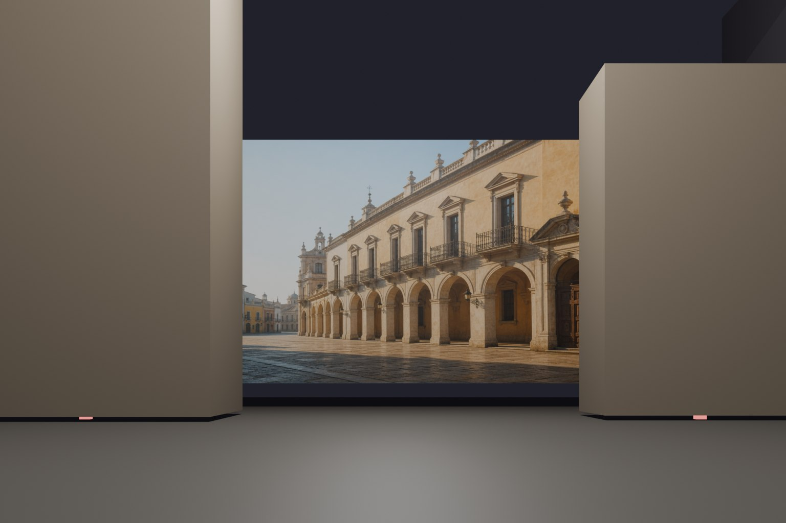
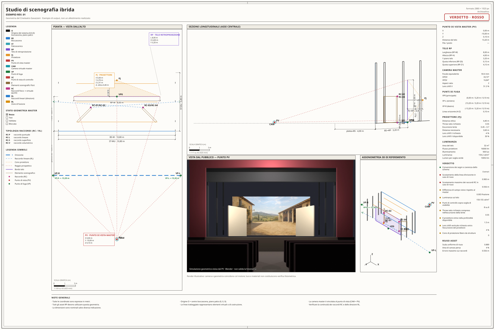
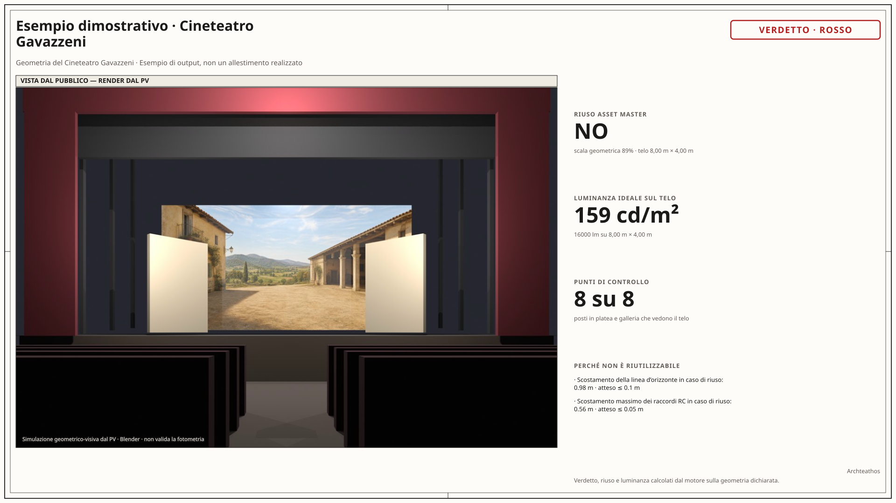
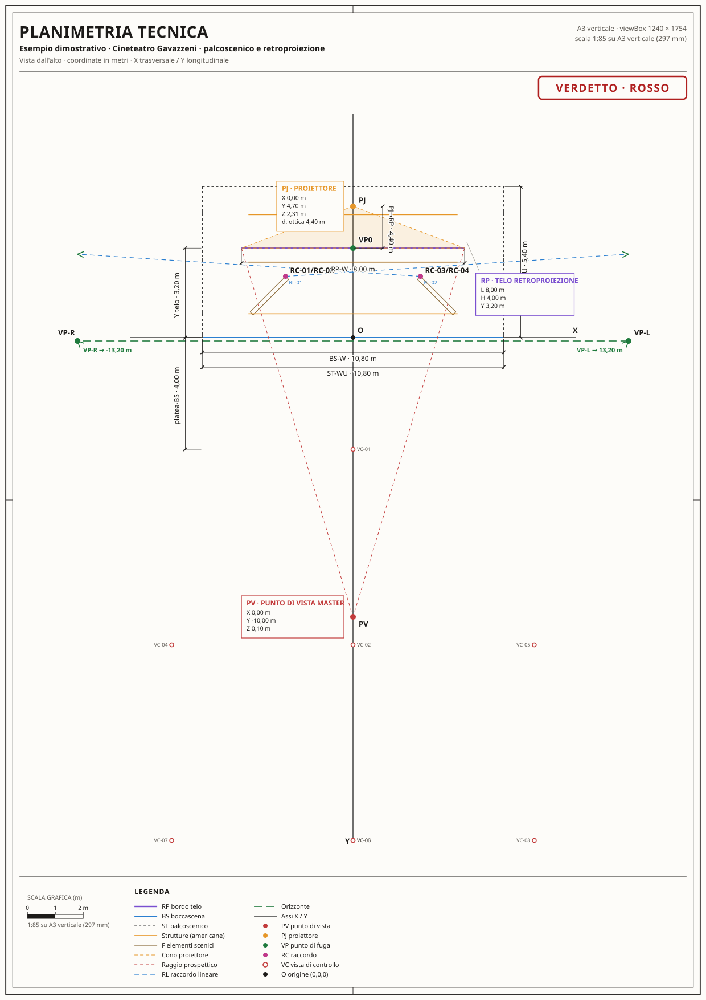
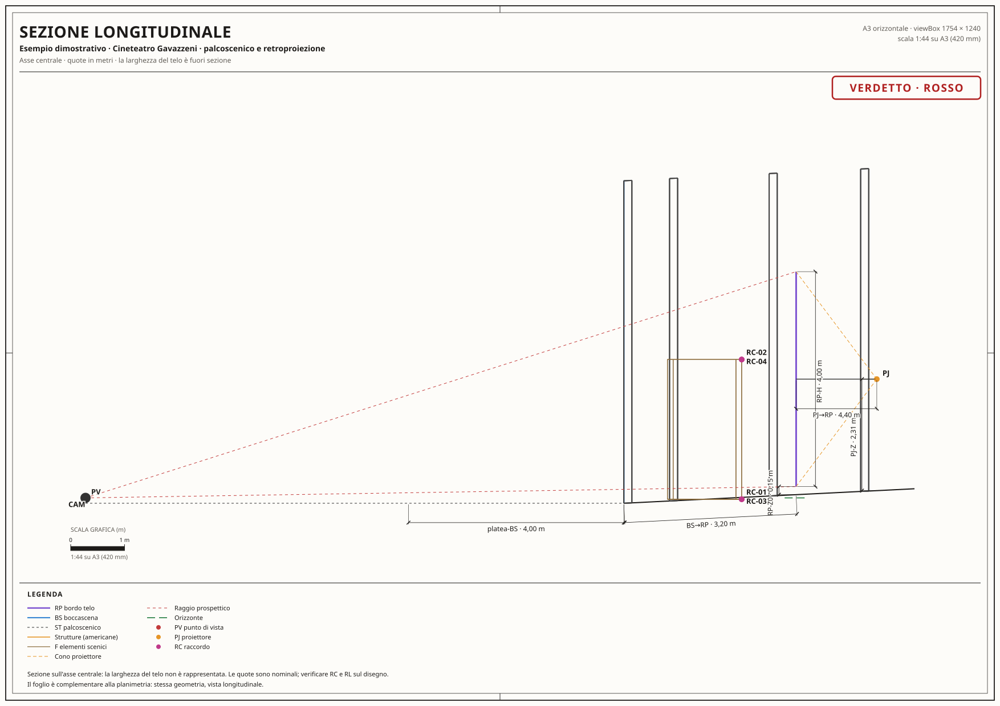
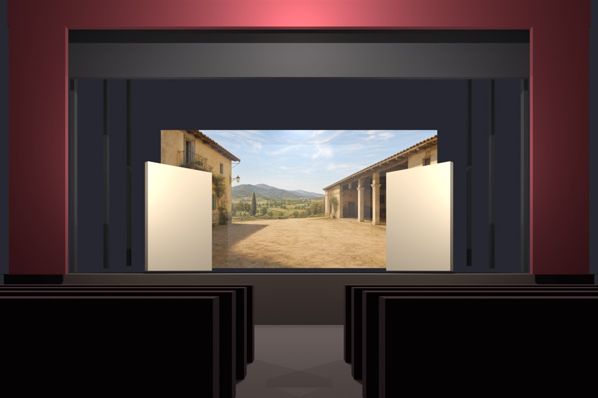

Verifica gli ingombri
e la proiezione.
Controlla se telo e proiettore trovano posto nel teatro, se l’ottica è compatibile e se il cono di proiezione incontra ostacoli. Ottieni un esito con il dettaglio dei singoli controlli.
Progettare la scenografia, con la geometria
Archteathos è l’app per studiare allestimenti che uniscono elementi fisici e retroproiezione. Parti dai rilievi della sala: verifica gli spazi, valuta la prospettiva e ottieni documenti tecnici e anteprime della scenografia.
Per scenografi, direzioni tecniche e produzione.

La vista dal pubblico. Render esemplificativo su geometria del Teatro Mario Del Monaco. La cornice della sala è convenzionale.
Elementi costruiti + immagine proiettata + punto di vista
Un unico modello geometrico per verifiche, disegni e anteprime.
Cosa puoi fare
Il progetto mette in relazione palco, telo, proiettore, scenografia e pubblico. L’app calcola i vincoli e rende visibili i punti da risolvere.
Controlla se telo e proiettore trovano posto nel teatro, se l’ottica è compatibile e se il cono di proiezione incontra ostacoli. Ottieni un esito con il dettaglio dei singoli controlli.
Confronta la sala con la geometria di riferimento. Misura gli scostamenti dell’orizzonte, dei raccordi tra costruito e proiettato e del campo visivo, per capire cosa adattare o rigenerare.
Produci pianta, sezione, tavola d’insieme e un foglio di presentazione. Quote, punto di vista e verifiche derivano dagli stessi dati: i reparti lavorano su una base comune.
Come funziona
Puoi lavorare con l’agente in linguaggio naturale, partendo dai materiali che hai già a disposizione.
01 / I dati in ingresso
Consegna una scheda tecnica, un PDF, appunti di sopralluogo o foto. L’agente organizza i dati del teatro e distingue le quote rilevate da quelle stimate.
02 / Il calcolo geometrico
L’app ricava camera e prospettiva, controlla spazi e proiezione e confronta il progetto con la geometria di riferimento. Ogni criticità ha una misura e una provenienza.
03 / I materiali di progetto
Ricevi i fogli tecnici e l’elenco delle misure usate. Se serve, aggiungi un fondale generato e il render dalla platea per discutere la soluzione con i reparti.
Non hai ancora tutte le quote? Puoi iniziare comunque: le stime vengono dichiarate e le misure da completare restano riconoscibili.
Cosa ottieni
Disegni quotati e sintesi visive per il confronto tecnico. Apri gli esempi per esplorare i documenti prodotti dall’app.

Ingrandisci ↗Le viste del progetto, le quote e l’esito delle verifiche in un unico foglio.

Ingrandisci ↗La vista d’insieme e i numeri del progetto per il confronto con la produzione.

Ingrandisci ↗Lo spazio dall’alto: ingombri, distanze, linee di proiezione e punto di vista.

Ingrandisci ↗Lo spazio di lato: altezze, pendenze e rapporti tra scena e platea.
Esempi dimostrativi ricavati dal modello geometrico del Cineteatro Gavazzeni. Illustrano gli output dell’app; non attestano un allestimento realizzato.
Quando vuoi vedere la scena
Al progetto tecnico puoi aggiungere due strumenti visivi: un’immagine per il telo e una simulazione della scenografia dal pubblico.
Una guida geometrica e le foto degli elementi orientano la generazione. Scegli atmosfera, luce e palette; ricevi il fondale in formato 2:1 e un referto su risoluzione, colore e neri. La coerenza prospettica si verifica a vista.

Il render Blender usa il punto di vista del progetto e mostra il rapporto tra costruito e proiettato. La cornice della sala è convenzionale: è un’anteprima geometrico-visiva, non una verifica fotometrica.
Dati e verifiche
Il valore di un risultato dipende dai dati che lo sostengono. Archteathos mantiene visibile questa relazione in ogni passaggio.
Ogni quota riporta la sua provenienza e il motivo dell’eventuale stima. Un controllo basato su misure non rilevate non viene dichiarato verde.
Se cambiano misure, foto o impostazioni artistiche, gli output che ne dipendono vengono riconosciuti come non aggiornati e non riutilizzati automaticamente.
Il software misura i parametri dell’immagine. La sovrapposizione del fondale alla griglia ti aiuta a controllare la prospettiva; la valutazione finale spetta a chi progetta.
È pensata per scenografie ibride, con elementi fisici raccordati a un fondale in retroproiezione. Non è legata a una singola opera: la geometria della sala e le scelte artistiche del progetto sono i dati su cui lavorare.
Le dimensioni di boccascena, palco e retropalco; le misure e la posizione del telo; i dati del proiettore e il punto di vista in platea. Schede tecniche, appunti e foto aiutano l’agente a organizzare il modello. Le informazioni mancanti vengono esplicitate.
No. Verifiche geometriche e documenti tecnici funzionano anche senza generazione di immagini e senza Blender. Fondale e render sono estensioni opzionali del workflow.
Il sopralluogo fornisce le misure verificate su cui basare il progetto. L’app organizza i dati, esegue i controlli e segnala le quote da completare; la decisione tecnica e di produzione resta alle persone responsabili.
Archteathos ti aiuta a misurarlo, verificarlo e immaginare cosa può diventare.